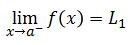
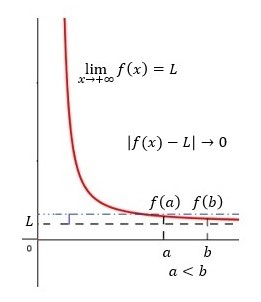
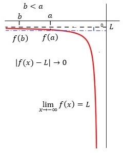
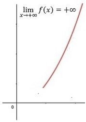
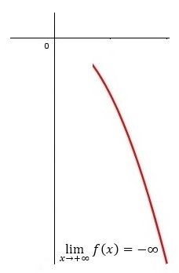
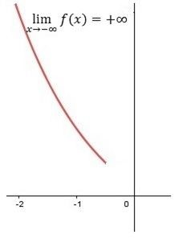
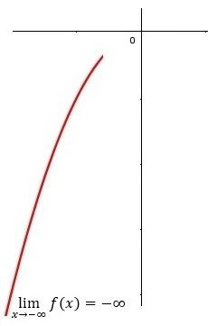

LIMITES
lim
x→a f(x) = L
El límite de f(x), cuando x tiende a a, es igual a L
o igualmente
f(x) → L cuando x → a
para decir que f(x) se acerca a el número L a medida que x se acerca a (pero no está igual a) el
número a desde ambos lados.
Definición
En análisis real y complejo, el concepto de límite es la clave de toque que formaliza la noción
intuitiva de ap
roximación hacia un punto concreto de una sucesión o una función, a medida que los pa
rámetros de esa sucesión o función se acercan a un determinado valor. En el análisis los
conceptos de series convergentes, derivada e integral definida se fundamentan mediant
e el concepto de límite.
En cálculo (especialmente en análisis real y matemático) este concepto se utiliza para definir los
conceptos fundamentales
de convergencia, continuidad, derivación, integración, entre otros. Si bien, el concepto de límite
parece intuitivamente
relacionado con el concepto de distancia, en un espacio euclídeo, es la clase de conjuntos abiertos
inducidos por dicha métrica,
lo que permite definir rigurosamente la noción de límite.
El concepto se puede generalizar a otros espacios topológicos, como pueden ser las redes
topológicas; de la misma manera,
es definido y utilizado en otras ramas de la matemática, como puede ser la teoría de categorías.
Para fórmulas, el límite se utiliza usualmente de forma abreviada mediante lim como en lim(an) = a o
se representa mediante
la flecha (→) como en an → a.
Límite de una sucesión
La definición de límite matemático para el caso de una sucesión nos indica intuitivamente que los
términos de la sucesión
se aproximan arbitrariamente a un único número o punto L, si existe, para valores grandes de
n. Esta definición es muy parecida a la definición del cuando tiende a .
Formalmente, se dice que la sucesión tiende hasta su límite L,
o que converge o es convergente , y se denota como:
si y solo si para todo valor real ε>0 se puede encontrar un número natural N tal que todos
los términos de la sucesión, a partir de un cierto valor natural n mayor que N,
se acerquen a L cuando n crezca ilimitadamente. Escrito en un lenguaje formal,
y de manera compacta: Este límite, si existe, se puede demostrar que es único. Si los términos de la
sucesión no
convergen a ningún punto específico, entonces se dice que la sucesión es divergente.
Límite de una sucesión de conjuntos
En teoría de conjuntos también se utiliza el concepto de límite, que se puede calcular sobre una
sucesión de conjuntos.
Para ello, los conjuntos deben de cumplir una serie de condiciones, como puede ser la monotonía
(creciente o decreciente).
De manera más general, y utilizando la definición de límite superior y límite inferior para una
sucesión de conjuntos cualquiera,
se dice que el límite de esta sucesión existe si el límite superior y límite inferior existen y son
iguales. En general se tiene:
Si el límite primer término y el penúltimo son iguales entonces se verifican todas las igualdades.
Estos conceptos son muy útiles en disciplinas de las matemáticas como la teoría de la medida,
especialmente en espacios de probabilidad.
Límites laterales
Una función tiene límite si existen los dos límites laterales y éstos coinciden.
El límite de una función f(x) en a, si existe, este límite es único.
Se podrían dar valores a x cada vez más próximos a a por la izquierda o por la derecha. Obtendremos
el límite lateral por la izquierda, al que llamaremos L1 y/o el límite lateral por la derecha, al
que llamaremos L2.
Por lo tanto, para que exista el límite L de una función f(x) en a, si existe, deben ser iguales el
límite por la izquierda y el límite por la derecha, L1 = L2.
Límites laterales por la izquierda
Se denomina límite por la izquierda (o límite lateral por la izquierda), al que llamaremos L1 de una
función f(x)definida en el intervalo abierto (a, c) y en un punto a, a la imagen, o el valor que
toma esa función, cuando el valor de la variable x se acerca mucho a a, siendo x < a.

Límite al infinito
Un límite al infinito es aquel al que tiende f(x) cuando la variable x se hace tan grande, tanto
en positivo como en negativo, como queramos. Entonces la función f(x) puede tender a un valor
finito o puede diverger a infinito (límite infinito).
Tipos de límites al infinito
Límite finito L cuando x → +∞
Existe un límite finito L cuando la variable x tiende a +∞ si, en un entorno pequeño alrededor
de L se cumple que, dentro de ese entorno, haciendo la variable x tan grande y positiva como se
quiera, la diferencia | f(x) – L | resulta tan pequeña como se quiera.
Como se ve en la figura:

Límite finito L cuando x → -∞
Existe un límite finito L cuando la variable x tiende a -∞ si, en un entorno pequeño alrededor
de L se cumple que, dentro de ese entorno, haciendo la variable x tan grande y negativa como se
quiera, la diferencia | f(x) – L | resulta tan pequeña como se quiera.
Como se ve en la figura:

Cuando x → +∞ y el límite = +∞
Si en f(x) y x → +∞, las imágenes de la función se hacen infinitamente grandes (positivas).

Cuando x → +∞ y el límite = -∞
Si en f(x) y x → +∞, las imágenes de la función se hacen infinitamente grandes y negativas.

Cuando x → -∞ y el límite = +∞
Si en f(x) y x → -∞, las imágenes de la función se hacen infinitamente grandes (positivas).

Cuando x → -∞ y el límite = -∞
Si en f(x) y x → -∞, las imágenes de la función se hacen infinitamente grandes y negativas.

Atras